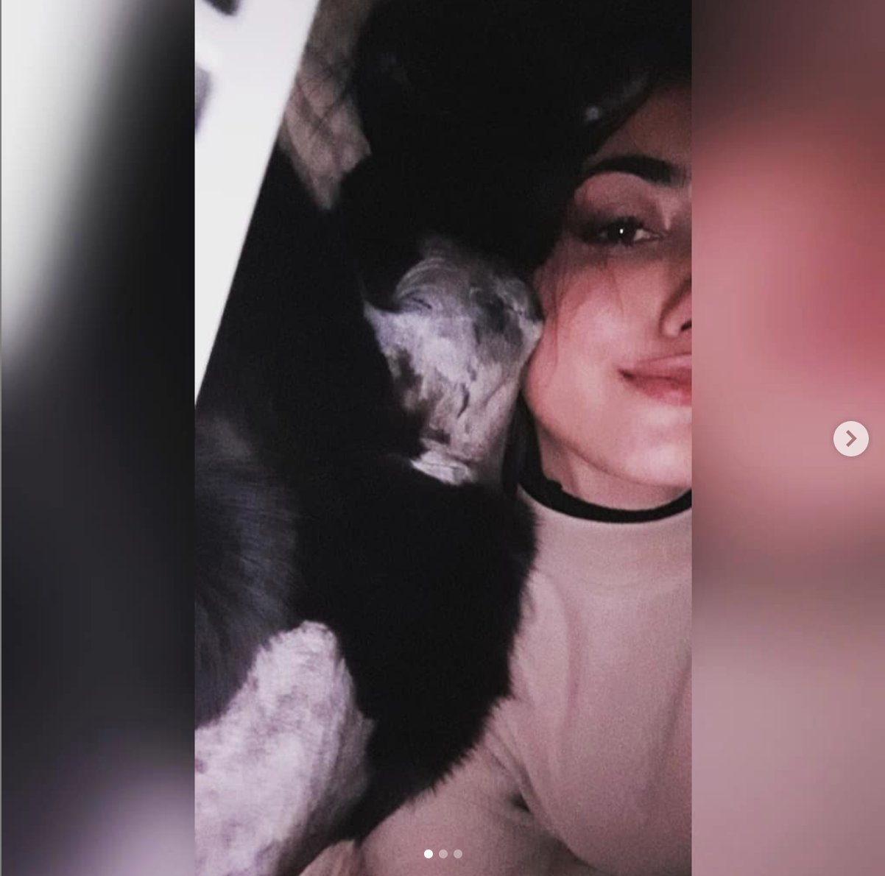
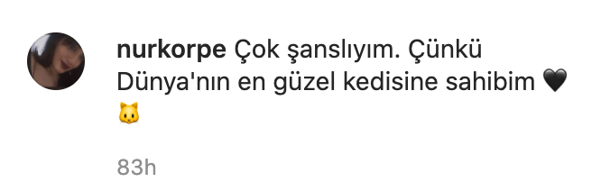
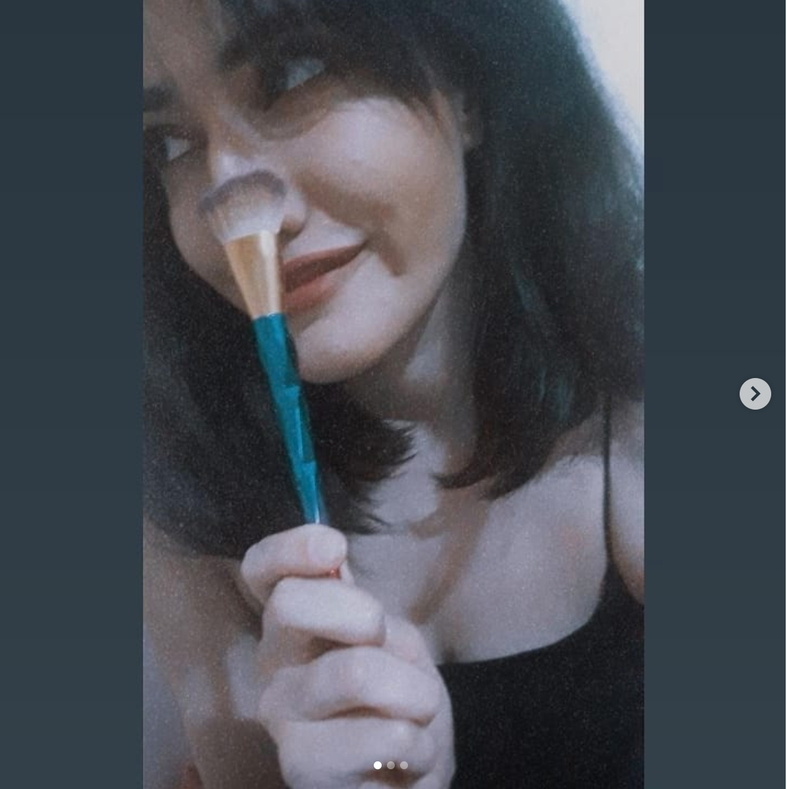
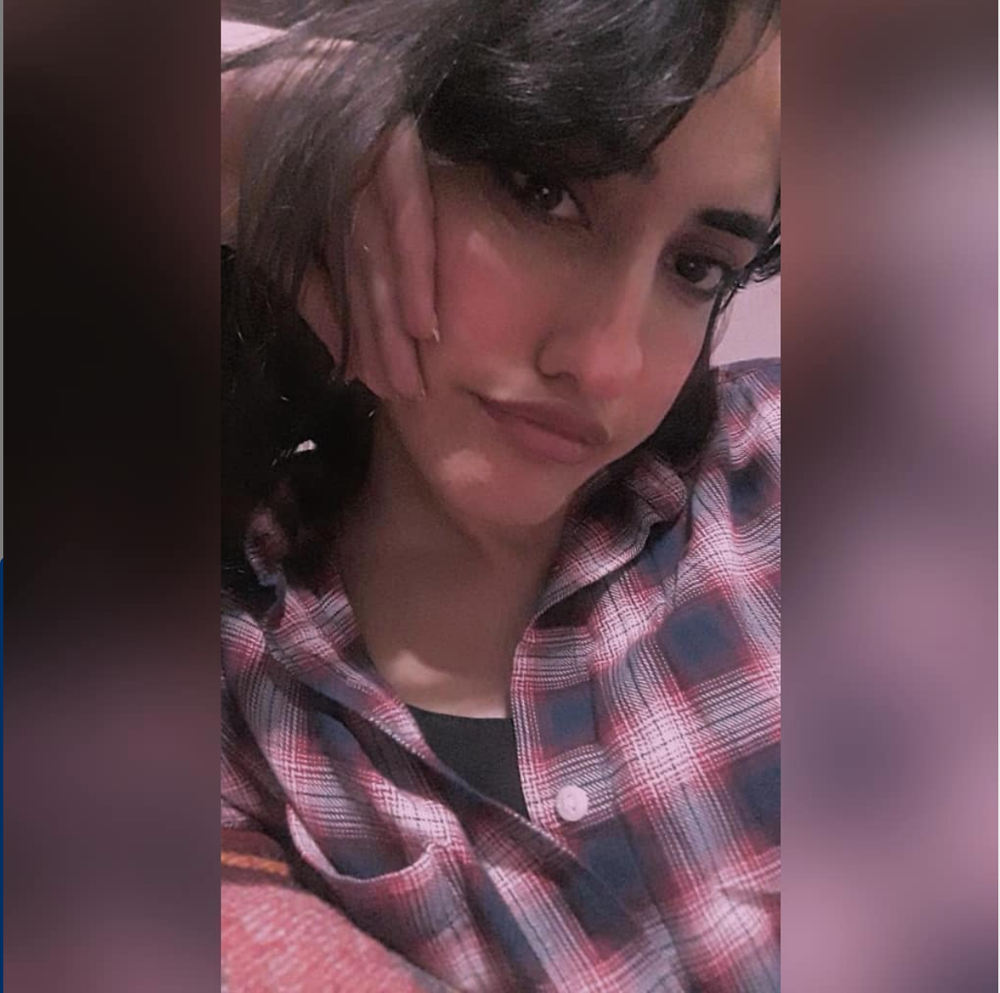
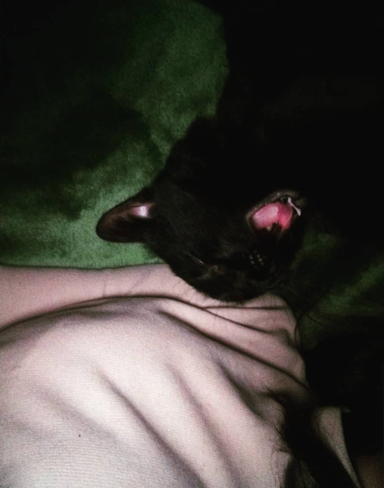
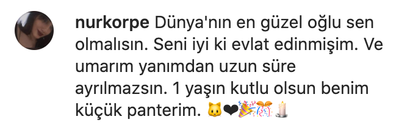
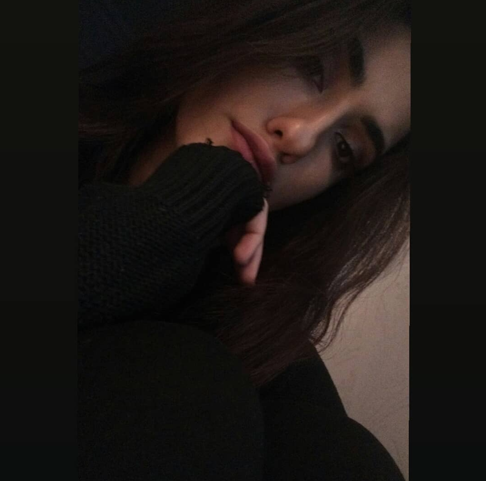
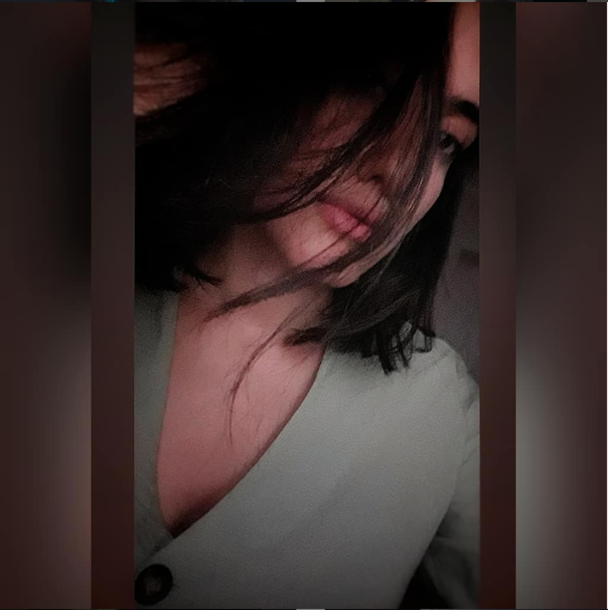
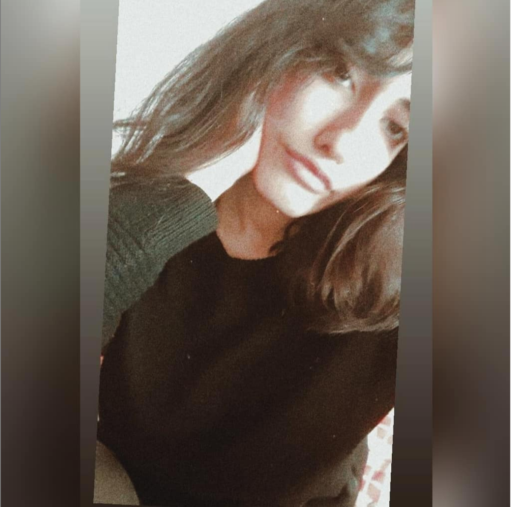
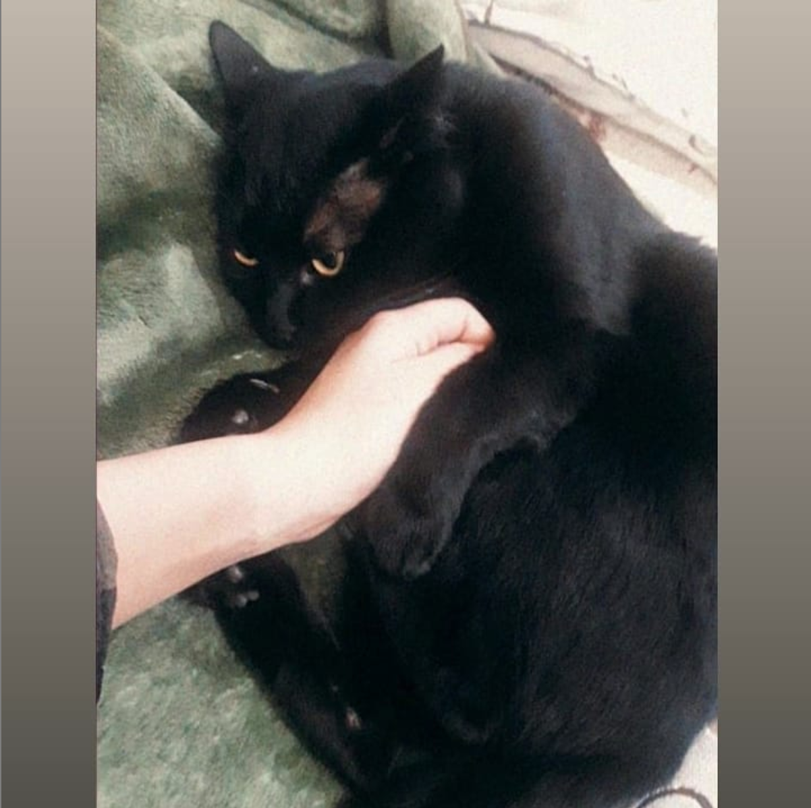

Çok şanslıyım. Çünkü dünyanın en güzel baristasına Müşterisiyim sahibim :)

2020 Yılında başıma gelen en tatlı şeysin.

Bana öyle bakma, anlayacaklar..
Listen on Spotify


Seni iyi ki görmüşüm, yazmışım. Ve umarım uzun süre devam ederiz

Yok mu o yandan güzel bakışların, beni musmutlu ettiğin.

Bide bu dağınık hallerin var tabi.. :) Dünya etrafında dönüyor resmen

Bana bakıp güldüğünde, dünyanın en mutlu insanı oluyo olabilirim.

Ve finalimiz rengar ile.. Dünyanın en şanslı kedisi..
bende şanslı olmak istiyorum nur.